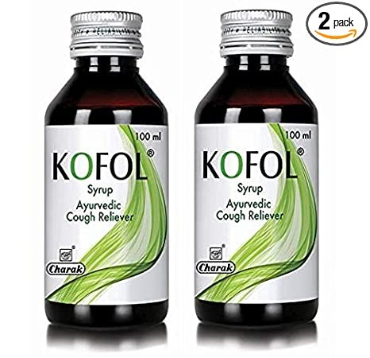
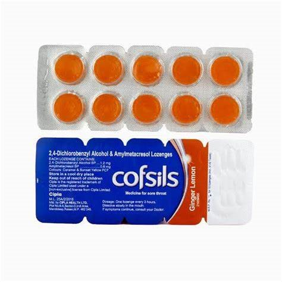
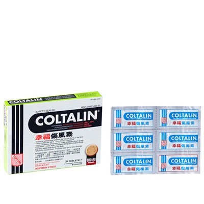
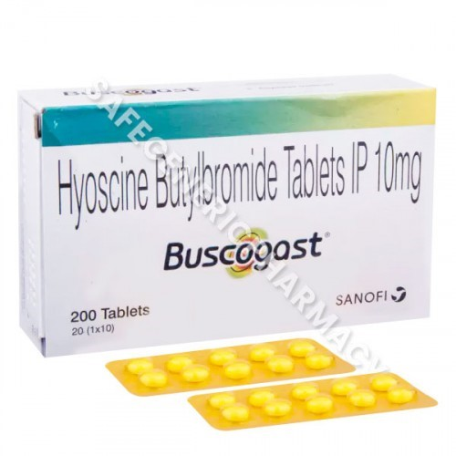

Manufacturer
GLAXO SMITHKLINE PHARMACEUTICALS LTD
Composition
CAFFEINE-32MG + PARACETAMOL-500MG + PHENYLEPHRINE-10MG
Pack Of
15 TABLETS
Consume Type
ORAL
Crocin Cold & Flu Max Tablet 15's belongs to the class of medication called 'cough and cold medications' primarily used to treat symptoms of the common cold and allergies like sneezing, runny/stuffy nose, fever, headache, body pains, congestion, or watery eyes. The common cold is a respiratory illness affecting the nose and throat. It is mostly caused by viruses known as 'rhinovirus'. The virus enters the body through the nose, mouth, or eyes and spreads easily through droplets in the air when the person who is sick sneezes, coughs, or talks.
Charak Pharma Kofol Cough Syrup With Goodness of Haridra, Sunthi, Bibhitaki, Yastimadhu, Vasa & Tulsi, Ayurvedic Cough Reliever, खाँसी की दवा (100 ML X 2)

PRICE - Rs 169
about the item
• Ayurvedic Remedy of Cough! Kofol Syrup of Charak is an Ayurvedic remedy formulated to effectively manage all types of cough, including wet or dry cough. This bottle of 100 ml contains the potential of various potent herbs that helps in heal your throat from soreness and pain , leaving a cooling and soothing effect.
• A Natural Cough-relieving Syrup! Kofol Syrup of Charak acts as a natural therapy for helps in providing relief from all types of coughs, including dry cough, wet cough, whooping cough, etc.
Cofsils Orange Lozenges Strip Of 10

Price - Rs 26
about this item
Cofsil orange cold & cough lozenges as the name suggests is a lozenge that can help a person gain relief from symptoms of cold and cough. Throat irritation and congestion is one of the most common symptoms of common cough and cold. Cofsil orange cold & cough lozenges are the perfect solutions to gain relief from irritated throat conditions caused by cold. Cofsil cold & cough lozenges come in six different flavours and Cofsil orange cold & cough lozenges are one of the most popular ones.
cortune Coltalin - Cold Tablets (For Adults)

Price - Rs 110
ABOUT THE ITEM
Fortune Coltalin - Cold Tablets (For Adults) are an effective cold tablet that can provide you with temporary relief from symptoms related to the common cold. Some of the conditions that this product relieves includes hay fever, allergies, aches and pains, headache, sore throat, fever, sneezing, and itchy eyes.
Buscogast Stomach Pain Specialist - Strip Of 10 Tablets

Price - Rs 110
ABOUT THE ITEM
Stomach and gut troubles attack us when we least expect them. Buscogast Stomach Pain Specialist works by relieving stomach troubles like bloating, abdominal cramps and gastrointestinal spasms. The hyoscine component is an anticholinergic that works by relieving stomach discomfort, diarrhoea, indigestion and bladder troubles. Paracetamol works by reducing inflammation and calming the smooth muscles of the digestive and urinary tract. Buscogast is indeed a life-saver in such situations. However, pregnant or breastfeeding women, patients undergoing surgery or any medical therapy must consult their doctor before taking Buscogast Stomach Pain Specialist.